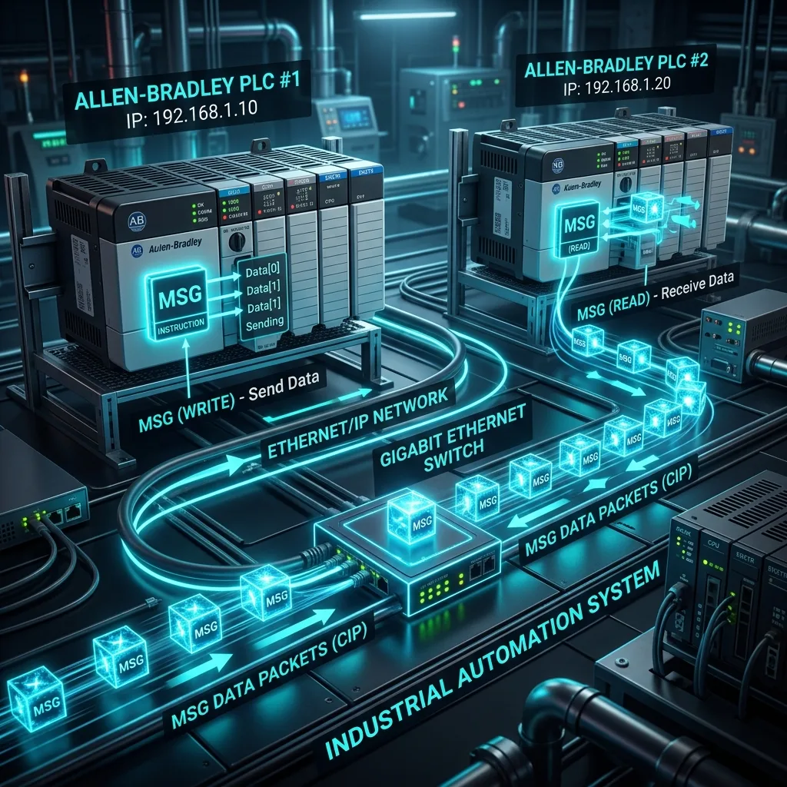

Cómo Configurar Mensajes MSG entre PLCs Allen-Bradley en Studio 5000
Publicado por el Equipo de Ingeniería de Robologix Automation | Saltillo, Coahuila
Resumen de Ingeniería:
La instrucción MSG (Message) en Studio 5000 se utiliza para el intercambio asíncrono no cíclico de bloques de datos (enteros, reales, arreglos o UDTs) entre dos o más procesadores Allen-Bradley a través de EtherNet/IP. Existen dos métodos principales: CIP Data Table Read (lectura) y CIP Data Table Write (escritura). La mejor práctica de ingeniería recomienda emplear Lecturas (Read) para evitar sobrescribir memoria de forma no controlada en el controlador remoto.

Visualización de transferencia de paquetes de datos MSG mediante EtherNet/IP.
Pasos de Configuración en Studio 5000
-
1. Creación del Tag de Control: En la tabla de tags del controlador, cree una variable del tipo de dato
MESSAGE(ejemplo:MSG_Lectura_Linea1). -
2. Selección de la Operación: Abra la ventana de configuración del bloque MSG. En la pestaña Configuration, seleccione el tipo de mensaje:
CIP Data Table Read. Especifique la variable de origen remota (Source Element), la cantidad de elementos (Number of Elements) y el tag local de destino (Destination Element). -
3. Configuración de la Ruta de Red (Communication Path): En la pestaña Communication, introduzca la ruta CIP. Para procesadores 5380 o 5580, la ruta suele ser el nombre del módulo Ethernet en el árbol de E/S seguido del puerto y la IP destino (ejemplo:
2, 192.168.1.50). -
4. Lógica de Disparo por Temporizador: Nunca active la instrucción MSG de forma continua en cada ciclo de escaneo. Utilice un temporizador (TON) de 500ms a 1000ms o un flanco de subida (ONS) para disparar la instrucción cuando la bandera
.DN(Done) o.ER(Error) esté en verdadero.
Arquitectura e Interconexión de PLCs con Robologix
Diseño de mapas de intercambio de datos deterministas sin colisiones de red CIP.
Enlace entre PLCs de celdas de soldadura/ensamble y controladores maestros de línea.
Ingenieros de campo disponibles en el acto en Saltillo y Ramos Arizpe.
Artículos Técnicos Relacionados:
¿Necesita Integrar Comunicaciones de Red entre Celdas Robóticas y PLCs de Planta?
En Robologix Automation programamos redes EtherNet/IP, instrucciones MSG y mapas de memoria entre celdas interconectadas en Saltillo y Ramos Arizpe.
Hablar con un Programador Senior